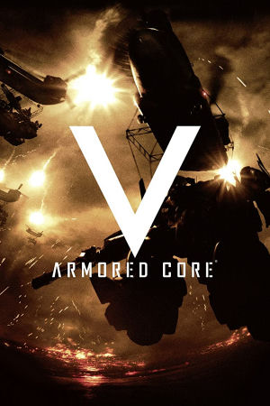

PlayStation 3, Xbox 360
Originally released in Japan on January 26th, 2012, and later published in North America (March 2012) and Europe (March 2012) by Namco Bandai Games, Armored Core V is a mecha action game developed by FromSoftware for the PlayStation 3 and Xbox 360. It acts as a soft reboot of the series, building on the framework of Armored Core 4 and For Answer while shifting to a more grounded, tactical direction. The ACs are smaller than in previous entries, and combat takes place in urban environments full of cover, rooftops, and narrow alleys, with a greater emphasis on stealth and close-range engagement. Missions are generally shorter and more tactical in nature. The customization system remains the heart of the game: players assemble their mech from a catalog of parts, tuning weapons, legs, and systems to suit specific missions. New to this entry was the back-mounted Overed Weapon system, which requires purging arm weapons to fire and can only be used once per mission, along with an entirely new Operator role in multiplayer where one player oversees the battle from a strategic map and directs their squad.
The game introduced a persistent online mode called Conquest, in which teams of up to 20 members fight over territories on a world map in five-versus-five matches, one of the series' strongest pushes toward competitive online play. Producer Toshifumi Nabeshima and his team emphasized team-based tactics, with the Operator able to mark enemy positions and relay tactical information to the four piloting members. While its steeper learning curve and emphasis on online play divided some longtime fans, Armored Core V was generally received as a fresh, focused take on mech combat. It was followed in 2013 by Armored Core: Verdict Day, which expanded on its team-war framework, and the series went on hiatus for a full decade until Armored Core VI: Fires of Rubicon in 2023.
FromSoftware
- Official developer website.
Armored Core Wiki
- Contains lots of useful information about Armored Core games.
RPCS3 - The best PS3
emulator.
xenia - The best Xbox 360
emulator.
Armored Core: V Manual (JP, PS3)
- PDF copy of the PS3 manual in Japanese.
Armored Core: V Manual (JP, 360)
- PDF copy of the of the Xbox 360 manual in Japanese.
Steam Grid DB (AC5) - Contains lots of cool options for artwork that can be used in your Steam library.